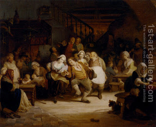

Bava Kamma 86 - Damages for Temporary Wound and Humiliation

If one injures another but it will heal, he pays for the loss of employment, but does he also pay damages for the temporary reduction in value?
Can we derive the answer from this ruling: "One who strikes his father but doesn't inflict a wound is obligated in five payments?" - No! Here he made his father bald with a depilatory cream, and his father used to dance in taverns.
One who humiliates a blind or a sleeping person is liable, but a sleeping person person that humiliated someone is not liable. In sum, one is not liable for humiliation unless he intends to injure .